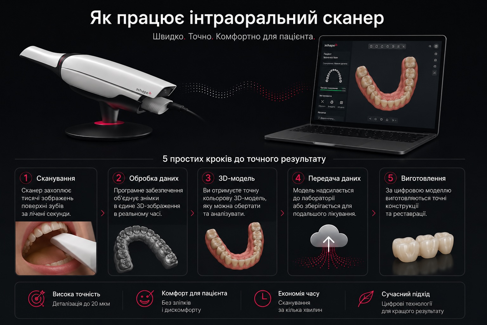
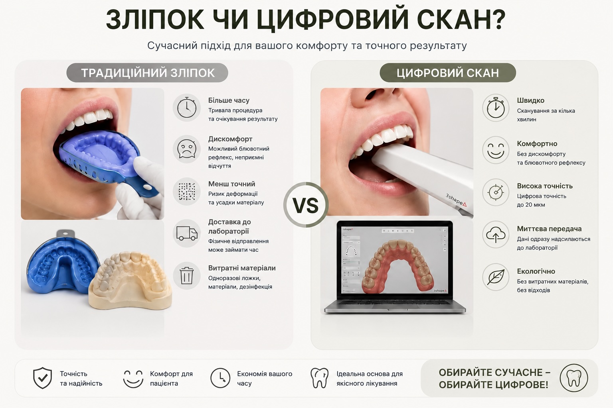
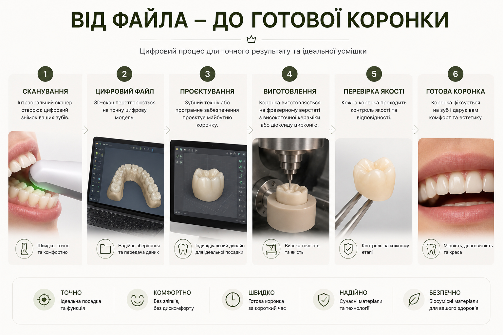

Ещё десять лет назад каждый визит к стоматологу перед протезированием означал одно и то же: ложку с холодной силиконовой массой во рту, несколько долгих минут ожидания, пока масса застынет, и неприятное ощущение, когда её снимают вместе с крошечными частицами между зубами. Сегодня эта процедура постепенно исчезает из клиник. На смену ей пришёл интраоральный 3D-сканер — маленькое оптическое устройство, которое создаёт трёхмерную копию ваших зубов с помощью света. В этом гайде разбираем, как именно он устроен, почему цифровой слепок точнее классического и где его применяют в ежедневной стоматологической практике.
- Принцип работы: свет вместо массы
- Анатомия сканера: что внутри
- Точность 20 микрон: что это означает на практике
- Цифровой vs силиконовый слепок: таблица
- CAD/CAM: от файла до готовой коронки
- Где применяется сканер в стоматологии
- Как это выглядит на приёме в Harmony Clinic
- Распространённые мифы о цифровых слепках
- Почему мы выбрали 3Shape TRIOS 4
- FAQ — частые вопросы пациентов
1. Принцип работы: свет вместо массы
Интраоральный сканер не касается зубов и не оставляет материала во рту. Вместо этого он использует технологию, которая называется структурированный свет (structured light scanning). Внутри наконечника находится миниатюрный проектор, который быстро излучает последовательность световых паттернов — полос, сеток или точек. Рядом расположена камера-сенсор, снимающая изображения этих паттернов, искажённых поверхностью зубов. По изменению формы полос алгоритм вычисляет расстояние до каждой точки поверхности с точностью до сотых миллиметра.
Одновременно с геометрией камера фиксирует цвет — это важно для будущей работы с винирами и керамикой, где оттенок зуба должен совпадать с соседними. Всё это происходит в режиме реального времени: врач проводит наконечником над зубами, а на мониторе постепенно вырастает трёхмерная модель челюсти. Если какого-то участка не хватает — программа подсвечивает его цветом и просит просканировать ещё раз.


2. Анатомия сканера: что внутри
Внешне современный интраоральный сканер похож на электрическую зубную щётку с утолщённым наконечником и кабелем, идущим к компьютеру. Внутри этого корпуса — сложная оптическая система:
- Проектор структурированного света. Видимый LED или лазерный модуль, излучающий паттерны с частотой несколько сотен раз в секунду.
- Цветная камера-сенсор. Высокоскоростная матрица, снимающая 1000–3000 кадров в секунду.
- Система зеркал. Направляет свет к рабочей зоне — кончику наконечника, размещаемому возле зуба.
- Подогрев зеркала. Предотвращает запотевание оптики от тёплого дыхания пациента — без него модель «распадается».
- Гироскоп и акселерометр. Ориентируют программу, с какой стороны челюсти сейчас работает врач.
- Графическая станция. Отдельный компьютер с мощным GPU, который в реальном времени склеивает сотни тысяч точек в единую сетку.
Сам наконечник подлежит автоклавированию между пациентами, а одноразовые колпачки на оптическую камеру обеспечивают стерильность на уровне хирургического инструмента.
3. Точность 20 микрон: что это означает на практике
Производители современных сканеров декларируют точность 10–20 микрометров. Для сравнения: толщина человеческого волоса — примерно 70 мкм, то есть сканер «видит» рельеф в пять раз мельче волоса. На практике это означает, что краевые границы коронки, фиссуры на жевательной поверхности зуба и даже микроскопические трещины эмали попадают в модель с фотореалистичной детализацией.
4. Цифровой vs силиконовый слепок: таблица
Силиконовые слепки до сих пор применяют в некоторых случаях — например, при снятии оттиска с подвижных дёсен в сложной имплантологии. Но для большинства плановых процедур цифровой метод объективно выигрывает по всем параметрам:

| Параметр | Силиконовый слепок | Цифровой 3D-скан |
|---|---|---|
| Длительность во рту | 4–7 минут на челюсть | 2–4 минуты на обе челюсти |
| Дискомфорт | Рвотный рефлекс у ~30% пациентов | Бесконтактная процедура |
| Точность | 60–150 мкм | 10–20 мкм |
| Искажение со временем | Усадка материала до 0,5% за 24 ч | Файл не меняется |
| Передача в лабораторию | Курьер, 1–3 дня | Облако, несколько секунд |
| Хранение | Гипсовая модель, место на полке | STL-файл, диск или облако |
| Повторное сканирование при браке | Новый визит в клинику | Досъёмка здесь и сейчас |
5. CAD/CAM: от файла до готовой коронки
Цифровой скан — это лишь первый шаг. Далее начинается цепочка, которую в стоматологии называют CAD/CAM-протоколом (от Computer-Aided Design / Computer-Aided Manufacturing). Сначала зубной техник открывает STL-файл в специализированной программе — чаще всего это exocad или 3Shape Dental System. В виртуальной среде он моделирует будущую коронку, винир или мост, подбирает форму под соседние зубы и проверяет прикус. Готовый проект экспортируется на фрезерный станок или 3D-принтер.
Фрезер вырезает реставрацию из керамического блока — чаще всего это дисиликат лития (E-max) для эстетических работ или диоксид циркония для жевательных зубов. После фрезерования изделие проходит обжиг в специальной печи, шлифовку и окрашивание, чтобы получить естественный оттенок. Всё это занимает от нескольких часов до 5–7 дней — в зависимости от сложности и количества единиц в работе.

6. Где применяется сканер в стоматологии
Реставрационная стоматология
Самое первое и самое очевидное применение — подготовка модели для коронок, вкладок, накладок и виниров. Сканер позволяет моделировать реставрацию так, чтобы она идеально стыковалась с соседними зубами и антагонистами. Если вам интересно глубже погрузиться в тему несъёмных реставраций, прочитайте отдельный разбор об отличиях виниров и коронок.
Имплантология
Перед операцией сканер помогает создать хирургический навигационный шаблон — индивидуальную каппу с отверстием, через которое врач сверлит кость точно в запланированной позиции. После приживления скан даёт точные данные для изготовления абатмента и коронки на импланте.
Ортодонтия
Скан заменяет гипсовые модели при планировании брекетов и элайнеров, а также позволяет показать пациенту прогноз — как именно переместятся зубы через каждые несколько месяцев лечения.
Динамический мониторинг
Если у пациента диагностирован бруксизм, патологическая стираемость или рецессия дёсен, врач делает контрольный скан раз в 6–12 месяцев. Программа накладывает модели одну на другую и цветом показывает участки, где изменилась геометрия. Это раннее выявление проблем без какого-либо рентгена.
Терапевтическое планирование
Современные версии программ подсвечивают подозрительные участки эмали, где возможны микротрещины или начальный кариес. Это дополнительный диагностический инструмент наряду с визуальным осмотром и рентгеном — об этапах кариеса отдельно рассказываем в материале о стадиях кариеса.
7. Как это выглядит на приёме в Harmony Clinic, Одесса
Цифровая стоматология в Одессе стремительно развивается, но качество оборудования и программного обеспечения существенно отличается между клиниками. Расскажем, как именно происходит сканирование у нас — чтобы вы знали, чего ожидать.
Прежде чем начать, врач высушивает зубы воздушным пистолетом на 2–3 секунды: влага на поверхности эмали может рассеивать структурированный свет и давать «провалы» в облаке точек. Затем наконечник TRIOS 4 подогревается встроенным элементом (~35–37 °C), чтобы избежать запотевания от дыхания. Весь подготовительный процесс занимает менее минуты — и мы начинаем.
Сканирование ведётся в стандартной последовательности: сначала верхняя челюсть (от моляров правой стороны до моляров левой), затем нижняя челюсть, и наконец — регистрация прикуса в двух положениях. Программа автоматически строит 3D-окклюзию. Если какой-то участок «провалился» из-за слюны или движения пациента — программа подсвечивает его жёлтым, и врач сразу досъёмывает лишь этот фрагмент без повторного сканирования всего ряда.
По завершении скана мы вместе с пациентом просматриваем трёхмерную модель на экране: видно каждый зуб, зоны стираемости, имеющиеся пломбы и коронки. Это позволяет «языком картинок» объяснить, что именно требует лечения и почему. Файл в формате STL или 3oxz сразу поступает в нашу цифровую зуботехническую лабораторию — без курьеров и риска повреждения.
8. Распространённые мифы о цифровых слепках
«Сканер облучает зубы»
Нет. Сканер работает с видимым светом и инфракрасной подсветкой — фактически это мощная камера. Никакого рентгеновского излучения он не испускает и не несёт никакой лучевой нагрузки ни для пациента, ни для врача.
«Это только для дорогих клиник»
Сканер уже более пяти лет входит в стандартное оснащение современных клиник среднего сегмента. Его стоимость окупается за счёт снижения брака коронок и времени приёма — а значит, цена цифровых работ сегодня не выше традиционных.
«Цифровой слепок не подходит для полных протезов»
Ещё 5 лет назад это частично было правдой: сложно было отсканировать беззубую челюсть без чётких ориентиров. Современные модели сканеров и алгоритмов уже уверенно работают и с полными съёмными протезами, хотя в самых сложных клинических случаях врач может комбинировать методики.
«Файл модели можно украсть и использовать»
STL-файл содержит лишь геометрию зубов — без имени, паспортных данных или медицинской истории. Доступ к файлу имеют только клиника и лаборатория, с которой заключён договор об обработке данных. Согласно GDPR/Украина 2155-VIII такая информация приравнивается к медицинской тайне.
9. Почему мы выбрали 3Shape TRIOS 4
На рынке есть несколько достойных альтернатив: iTero Element, Medit i700, Carestream CS 3700, Planmeca Emerald S. Мы остановились на 3Shape TRIOS 4 по нескольким причинам. Во-первых, он не требует опрыскивания зубов матовой пудрой — часть более дешёвых сканеров требует предварительно припорошить поверхность белым порошком для распознавания. Во-вторых, у него беспроводной наконечник на аккумуляторе, что даёт врачу больше свободы движений. В-третьих, он умеет в реальном времени подсвечивать на модели подозрительные участки начального кариеса — фактически выполняя роль диагностического скринера.
Работа по единому цифровому протоколу — это наш базовый стандарт, который одинаково применяется и в направлениях реставраций, и при планировании более сложных операций. Если вас интересует, как именно выглядит эта технология в работе хирурга, у нас есть полный гайд по имплантации зубов.
10. FAQ — частые вопросы пациентов
Что такое интраоральный 3D-сканер простыми словами?
Это маленькая «фотокамера» на ручке, которая освещает зубы специальным узором из света и по деформации этого узора вычисляет форму поверхности. На выходе — точная трёхмерная модель зубов в компьютере врача.
Сколько времени длится цифровое сканирование?
Сканирование одной челюсти — около 1–2 минут, полный скан верх + низ + прикус — в среднем 2–4 минуты. Если нужен лишь препарированный под коронку зуб, хватит 30 секунд.
Цифровой слепок действительно точнее силиконового?
Да. Погрешность сканера — 10–20 мкм против 60–150 мкм у силиконовых масс, которые кроме того дают усадку до 0,5% за сутки хранения. Меньшая погрешность означает коронки, которые плотнее прилегают к зубу.
Безопасно ли сканирование для беременных и детей?
Абсолютно. Сканер не использует рентгеновское излучение — только видимый свет. Поэтому процедуру можно проводить беременным, детям, людям с кардиостимулятором и кому угодно без ограничений.
В каком формате врач передаёт мою цифровую модель?
Стандартные открытые форматы — STL, PLY или OBJ. Иногда используется проприетарный формат 3Shape (3oxz/dcm). Файл весит 20–80 МБ и мгновенно передаётся в зуботехническую лабораторию через защищённое облачное хранилище.
Можно ли получить свой цифровой слепок на руки?
Да. По запросу мы предоставляем пациенту копию STL-файла — он пригодится, если в будущем вы захотите сравнить состояние зубов или обратиться в другую клинику для второго мнения.
Заменит ли сканер рентген и КТ?
Нет. Сканер видит лишь видимую поверхность зубов и дёсен, но не «заглядывает» внутрь кости или корня. Поэтому в планировании имплантации и лечении корневых каналов он используется вместе с компьютерной томографией (КТ).
Хотите ощутить цифровое сканирование на себе? В Harmony Clinic (Одесса, ул. Новаторов 1А) эта процедура входит в первичную консультацию — бесплатно.
Записаться: +38 068 779 45 47